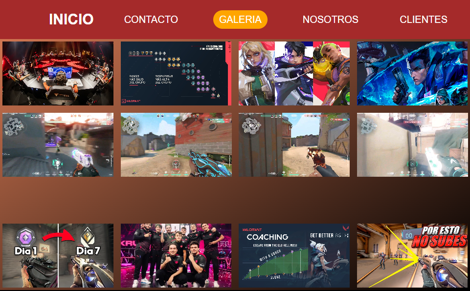
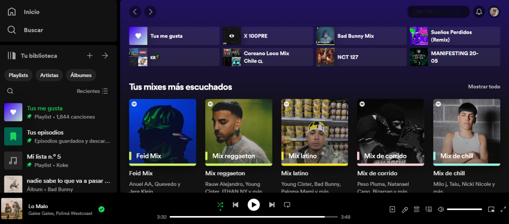
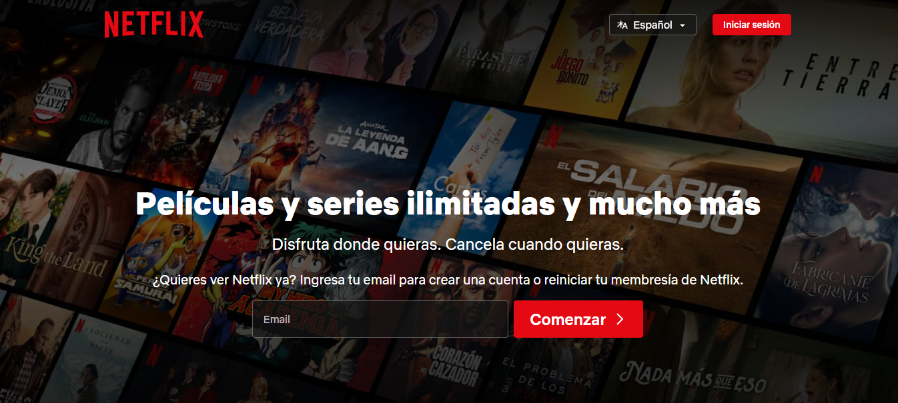

Valo Mancos
Valo Mancos es una plataforma dedicada a proporcionar recursos,
consejos y herramientas para ayudar a mejorar el rendimiento en juegos
shooter, específicamente en el popular juego de disparos Valorant. Su
objetivo principal es ayudar a los jugadores a subir de rango y
mejorar sus habilidades en el juego. Ofrece guías, tutoriales,
estrategias, análisis de partidas y otros recursos útiles para que los
jugadores puedan desarrollar su juego y alcanzar sus metas en
Valorant.

Clon Spotify
Un clon de Spotify es una plataforma web que replica las
características y funcionalidades principales del popular servicio de
transmisión de música. Ofrece a los usuarios acceso a un amplio
catálogo de canciones, álbumes y listas de reproducción, así como
funciones como la creación de listas de reproducción personalizadas,
recomendaciones de música basadas en gustos y hábitos de escucha, y la
capacidad de seguir a otros usuarios y artistas.

Clon Netflix
Es un sitio web clon de Netflix, que imita la apariencia y
funcionalidades esenciales del popular servicio de streaming de
películas y series.